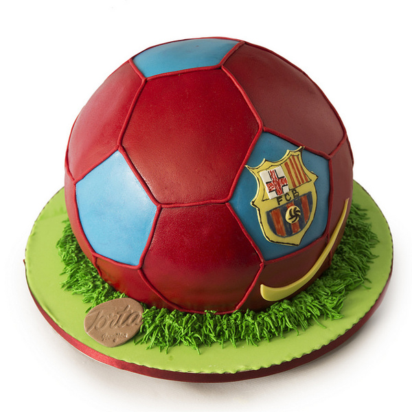

More Website Templates @ TemplateMonster.com - July 30, 2014!


TORTA
“LOPTA FC BARCELONA”
“LOPTA FC BARCELONA”

TORTA
“CREATIVE ART”
“CREATIVE ART”


TORTA
“ZA PRVI ROĐENDAN”
“ZA PRVI ROĐENDAN”
1.
TORTA - "FC BARCELONA" je jedna od najprodavanijih torti u našem asortimanu torti i kolača. Najviše ih naručuju roditelji čija su djeca u dobi između 7 i 10 godina. Torta je napravljena od lagane kreme, punjena keksom, orasima i bademima. Boje su dobivene na prirodan način, te upotpunjuju okus torte na svoj jedinstven način.
Više informacija
2.
TORTA - "CREATIV ART" je druga od najprodavanijih torti u našem asortimanu torti i kolača. Kupci ove torte su mladi kreativci koju su inspirisani bojama i kontrastima. Roditelji čija su djeca u dobi od 8 do 12 godina naračuju ovu nevjerovatnu tortu. Torta je napravljena iz tri dijela i to dvije čokoladne biskvit kore i jedna mliječna.
Više informacija
3.
TORTA - “ZA PRVI ROĐENDAN” je defintivno najljepši poklon koji možete priuštiti svom djetetu za prvi rođendan. Torta ja namjenjena za dječake i djevojčice. Pravljena je od vrhunskih namirnica namjenjenoj djeci za uzrast jedne godine. Baza ovog kolača jeste čokoladni montte, a kora od mekanog čokoladnog biskvita.
Više informacija
DOBRO DOŠLI
Poštovani,
mi smo studenti treće godine Ekonomskog fakulteta Univerziteta u Sarajevu. Završna godina smo na smijeru Razvoj poslovnih informacionih sistema (RIPS) gdje slušamo predmet Softverski inžinjering. Na ovom predmetu učimo mnogo toga o softverskom stvaralaštvu, stoga imamo i fakultetsko-domaći radi da kreiramo webapp. Mi smo se odvažili i počeli kodirati stranicu za torte i kolače namjenjene roditeljima čija su dijeca u uzrastu od 1 do 13 godina.
Ova stranica je namjenjena isključivo za predmet Softverski inžinjering, te je kodirata u svrhu ocjenjivanja naše grupe.MUDRE IZREKE
- Okusi se ne rađaju nego stvaraju. Mark Twain.- Ako ikada izgubite temu za konverzaciju, pokrenite temu hrane. Leigh Hunt.
- Novo britansko istraživanje pokazalo je kako 9 od 10 ispitanika voli čokoladu. Deseti laže. Robert W. Paul
- Gostoljubivost podrazumijeva toplinu ognjišta, ukusnu hranu i pravo na tišinu. Ralph Waldo Emerson
U našoj top ponudi nudimo


{kind=link}
O fakultetu
EKONOMSKI FAKULTET
Ekonomski fakultet u Sarajevu osnovan je 1952. godine. U prvu generaciju upisano je 105 redovnih i 129 vanrednih studenata.Više o našem fakultetu.
Naše novosti
Na platou skenderija će se organizovati dvodnevni događaj prezentacija poslastica građanima grada Sarajeva, gdje ćemo i mi biti. Dobro nam došli i radujemo se svakom novom susretu.
Ovim putem pozivamo sve da nam se pridruže 15.aprila u BBI centru na proslavu 10. godine rada naše kompanije. Dobro ste došli svi!
Radno vrijeme
- pon-pet 10PM - 20AM
- Subota 12AM - 22PM
- Nedjelja i praznicima NE RADIMO